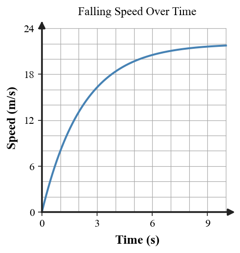

Practice focus: Distinguish free fall from nonfree fall and explain how air resistance affects falling motion.
Define free fall in terms of the forces acting on an object.
Classify a rock falling in a vacuum as free fall or nonfree fall.
Classify a parachutist with an open parachute as free fall or nonfree fall.
Name the upward force that can act on an object falling through air.
Terminal speed occurs when weight and air resistance are balanced or unbalanced?
At terminal speed, is acceleration zero or nonzero?
At terminal speed, is the falling object stopped or still moving?
Identify which force model best represents free fall.
Identify which force model best represents terminal speed.
A ball is thrown upward with air resistance ignored. Is it in free fall while moving upward?
A coin and feather fall in a vacuum. Which has the larger free-fall acceleration?
On the speed-time graph, what does the leveling-off region represent?

A falling object has weight 80 N down and air resistance 40 N up. Determine $F_{net}$ and its direction.
A falling object has 40 N weight and 40 N air resistance. Determine net force and acceleration.
A parachute opens and air resistance briefly becomes larger than weight. State the net-force direction and describe how downward speed changes.
Compare two objects with the same weight but different air resistance. Which has the smaller downward net force?
Use the three force models to identify which object has the largest downward net force.
Use the terminal-speed graph to identify when acceleration is largest: early in the fall or near the flat region.
A 90 N falling object experiences 30 N of air resistance. Calculate the net force and state whether it is at terminal speed.
A falling object has zero net force but a downward velocity. Predict its motion over the next moment.
A leaf and rock have similar weight but different surface area. Predict which experiences more air resistance at the same speed.
At one moment weight is 70 N down and air resistance is 55 N up. Determine the net force and whether acceleration is less than $g$.
Explain what must happen to air resistance as a falling object speeds up toward terminal speed.
A ball in ideal free fall has no air resistance. If its mass doubles, what happens to its acceleration?
A student says, “At terminal speed gravity stops acting.” Critique the statement using weight, air resistance, net force, and acceleration.
A student sees an upward air-resistance arrow and concludes the skydiver must be moving upward. Explain the difference between force direction and motion direction.
A paper and coin are dropped in air and the coin lands first. Explain why this does not prove that heavier objects have greater free-fall acceleration.
Use the terminal-speed graph to explain why speed can be constant while both weight and air resistance still act.
Build a complete force-and-motion model for a skydiver from the instant of the jump to terminal speed. Include how air resistance, net force, acceleration, and speed change.
Two parachutes carry equal weights but have different surface areas. Design an evidence-based prediction for which reaches a lower terminal speed and explain what data would test the prediction.